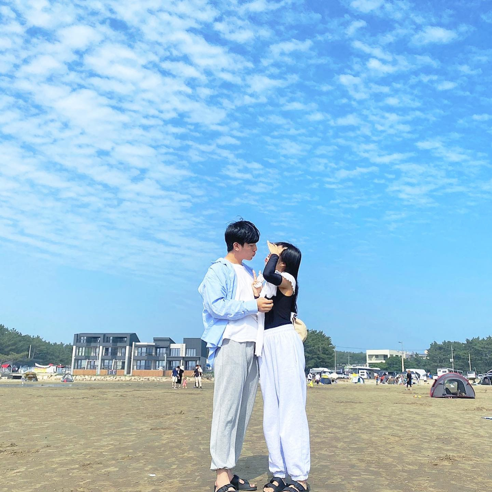
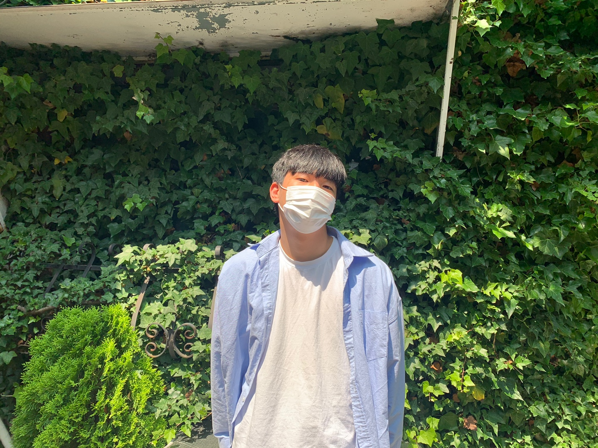

하은아 안녕 ㅋㅋㅋㅋ 많다면 많고 짧다면 짧다고 느낄 수 있을테지만 벌써 마지막 편지를 쓰고있네..
사실 이 편지를 처음에 썻을때 엄청 길게 썻는데 그게 날라가 버렸지 뭐야 ㅜㅜㅜ 진짜 멘탈 나갔당 ...
우리가 벌써 만난지 2년이나 되었네ㅎㅎ 진짜 시간 엄청 빠르다 그래도 우리 2주년이 내가 군대가기전에 있어서 참 다행이야..
지금까지 큰 다툼없이 여기까지 오게된게 정말 감사하고 다행이라고 생각해.. 그래도 사소한 다툼은 많았지만 그만큼 우리가 더욱 가까워 질 수 있었던 계기라고 생각해
이번에 2주년과 나의 군 입대 전 마지막 1박2일로 여행계획을 짜고 있었지.. 하지만 단 둘은 허락을 안해주셔서 ㅜㅜ 한상희네랑 같이 가게되었지만 이것도 좋았던 것 같아
6월 19일에 11시쯤에 하은이가 우리집으로 와줬지 ㅎㅎ 너무 고마웠어 그때 사실 조금 귀찮아서 뒹굴거리고 있었거든 ㅎㅎ
그리고 12시쯤에 밥먹으러 핵밥에 갔지 ㅎㅎ 핵밥을 진짜 조금만 더 빨리 알았다면 많이 먹었을텐데 아쉽다.. 정말 맛있는데 ㅜ 특히 스테이크 !
아무튼 그렇게 점심을 먹고 한상희네랑 만나서 서산 이마트로 장보러갔었지 우리 커플 잠옷살라구 ㅜㅜ 근데 진짜 너무 비싸서 어쩔 수 없이 못샀다는점... 너무 아쉽당
그렇게 한 12만원정도 장을봤는데 샀을때는 부족하지 않을까 싶었는데 막상 먹어보니 ㅋㅋㅋㅋㅋㅋㅋㅋㅋㅋㅋㅋ 진짜 개많이 남아서 아까웠음 ㅇㅈ?
그렇게 서산까지가서 장을봐서 조금 늦게 도착했지만 오히려 해가 슬슬 지는 시간대에 가서 별로 안뜨겁고 좋았지 ㅋㅋ
펜션에서 해루질 도구 챙긴다음 근처 해수욕장에 갔는데 거기서 맛소금사가지고 맛조개잡으러 갔었지 ㅋㅋㅋ
처음에 가서 한 30분 동안 모래 엄청 팠는데 진짜 안나오는거 개오바임 ㅋㅋㅋ 그러다 유튜브 보고 구멍 찾아서 뿌렸는데 맛조개 뾱하고 튀어나오는거보고 진짜 신기했는데 ㅋㅋ
진짜 아직도 그때 흥분과 설렘이 잊혀지질 않아ㅋㅋㅋ 하은이가 해맑게 웃는 모습도 생각나고 정말 좋았던 것 같아
그렇게 한 2시간 정도 바다에서 쪼그려 앉아서 모래만 캤다.. 결국 잡은건 맛조개 1마리에 조개 5개..? ㅋㅋㅋㅋㅋㅋㅋ 개망..
진짜 나 그것때문에 허벅지에 알베겨서 3일을 고생했다 ㅋㅋ
6시쯤에 숙소에 와서 간단하게 옷 갈아입고 수영장에서 수영했지 기억나 ? 하은이 수영 하나도 못하더라 ㅋㅋㅋ 내가 가르쳐주고 싶었는데.. 나도 딱히 배우고 하는게 아니라서 어떻게 가르쳐주는지 몰랐당..
8시쯤에 바베큐장 예약해놔서 한 1시간쯤 수영하고 나와서 씻고 밥먹을 준비 했지 ㅋㅋ 난 그때부터 살짝 피곤하더라..
암튼 그렇게 8시에 고기먹으러 갔는데 고기 못굽는다고 계속 뭐라고해서 .. 사실 난 기분이 별로 안좋았지만 다 유쾌하게 넘어가는 것 같아서 걍 나도 가만히 있었지..
아저씨 말투 넘 싸가지 없 나만 그렇게 느꼈나.. 난 삽겹살 맛만있던데 ㅋㅅㅋ 암튼 고기 맛있게 구워주셔서 술이랑 같이 먹는데 진짜 엄청 배부르더라
내가 입이 좀 짧아서.. 오래 못먹거든 ㅋㅋㅋㅋ 그래도 술게임은 너무 재밌었어 양세찬게임이랑 라이어게임 ㅎㅎ 정말 재밌더라
그렇게 한 11시 30분까지 밥 먹고 정리하고 숙소에 들어와서 드디어 우리 둘 만의 시간을 가지게 되었지 ㅜㅜ
들어가자마자 힘들어서 누워있다가 한 12시 조금 넘어서 씻고 다시 누워서 티비봤지 그리고 같이 시간도 보내고 ㅎㅅㅎ 너무 좋았어 진짜
조금 많이 피곤했던게 아쉽긴 했지만 그래도 모든게 행복하더라.. 그러다 너무 피곤해서 바로 같이 잠들었지 ㅋㅋㅋㅋㅋㅋㅋ 진짜 엄청 피곤했당
근데 난 술마시면 좀 일찍 깨는편이라 5시쯤에 일어났다가 다시 자고 한 4번 자다 깬듯 그때마다 하은이 확인해봤는데 ㅋㅋㅋ ㄹㅇ 엄청 잘자더라 많이 피곤했나방
난 좀 껴안고 있고 싶었는데 하은이가 계속 밀쳐서 결국 똑바로 누워서 10시까지 잠 ㅋㅋㅋ
11시까지 퇴실이라 부랴부랴 씻고 나와서 안면도로 칼국수 먹으러 갔지롱.. 내 생각보단 맛있었는데 하은이는 괜찮았을지 모르겠네
그렇게 밥 다 먹고 12시 30분쯤 트레블카페에 갔는데 사람 진짜 많더라.. 엄청 이쁘다해서 기대했는데 생각보다 좁고 이렇게까지 많이오는게 이해는 못할정도? 그래도 같이 사진도 찍고 너무 좋았당
거기서 원래 1시간씩만 앉아야되는데 ㅋㅋ 우리 꼼수써서 거의 2시간 넘게 있었지ㅎㅎㅎ 그리고 내포에 왔는데 그때 난 솔직히 나 집갈때 까지는 하은이랑 둘이 있고싶었는데.. ㅎ
그래도 한 2시간 정도는 같이 진격거도 보고 누워있어서 편하고 좋았당 !0!
그렇게 한 6시 30분쯤에 헤어지고 ㅜㅜ 좀 더 있고 싶었는데 까비.. 그렇게 우리 2주년 여행은 끝났지롱 ㅜㅜ 너무 좋기도 했는데 단 둘이 가고싶은 맘도 커서 조금 아쉽다 ㅜㅜ
너무 짧기도 했고 다음에는 나랑 1주일 정도 놀러다니자 ㅜㅜ 너랑 정말 같이 살면 너무 행복할 것 같아 너무 사랑하고 좋아해
이렇게 벌써 마지막 편지가 거의 끝나가는데 ㅜㅜ 너무 아쉬워하지말고.. 내가 훈련소에서 하은이 집으로 편지 많이 써볼게.. 전화도 자주하고 !!
진짜 너무 사랑하고 내가 전역할때까지 건강하고 도전하는일마다 잘 되길 바랄게 ㅎㅎ 물론 하은이는 스스로 엄청 잘해서 걱정은 안되지만 ㅋㅋ
아무튼 이렇게 편지를 마친다 너무 사랑하고 고맙다 항상 존경하면서 같이 사랑하자
-하은이가 좋아하는 범수가-
 